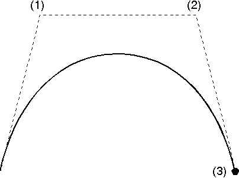
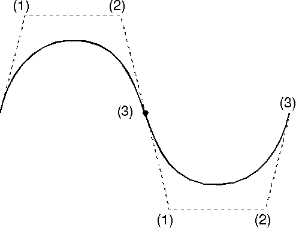

GpiPolySpline creates a succession of one or more Bezier splines. The spline also is a curve, but its construction method is different from that of the fillet. As input to this function, you supply three construction points for each spline. The first spline starts from the current position and ends at the third specified point. The two intermediate points are control points for the curve. Subsequent splines start at the end point of the previous spline, have two intermediary control points, and end at the third control point. The following figure shows the construction method for the spline.
The Spline
Points (1) and (2) are the control points of the spline, and point (3) is the end point.
To avoid discontinuity of gradient between the end of one spline and the start of the next, ensure that the last two construction points of the first spline and the first two construction points of the second spline are positioned along a single construction line. This concept is shown in the following figure.
Spline with No Discontinuity of Gradient
The last two points of the first spline (points 2 and 3) are positioned along the same construction line as the first two points (current position and point 1) of the second spline.